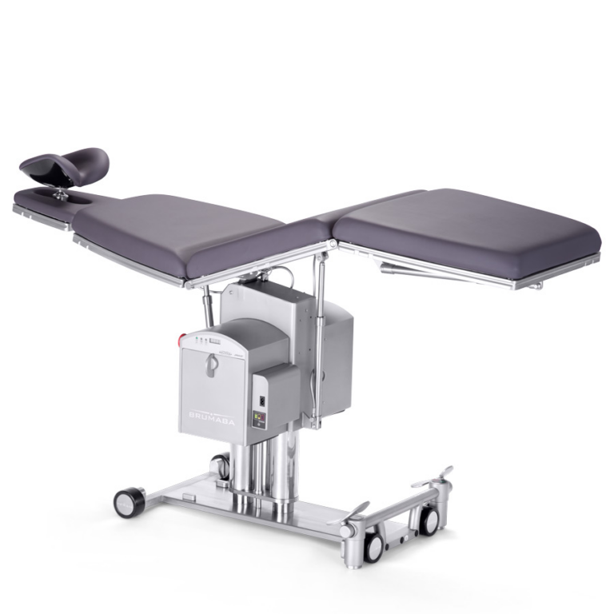
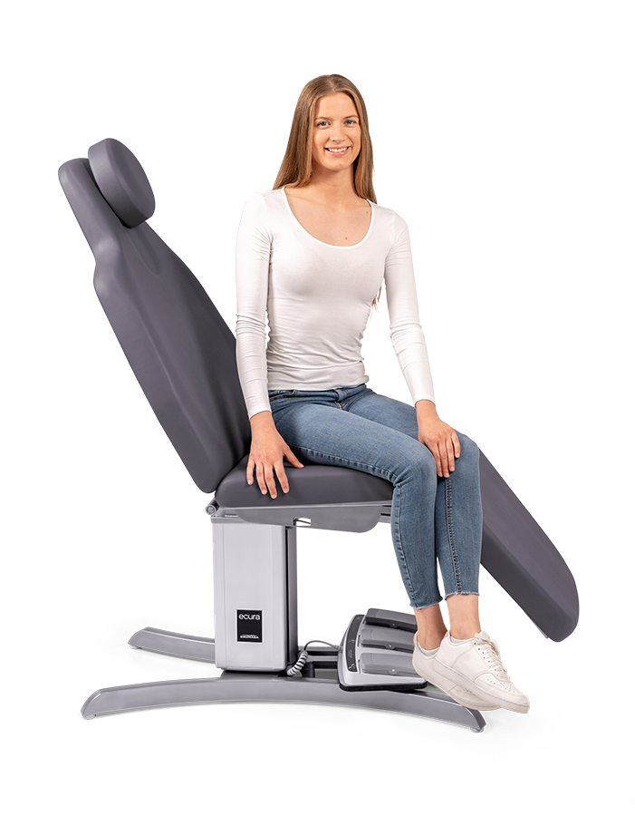
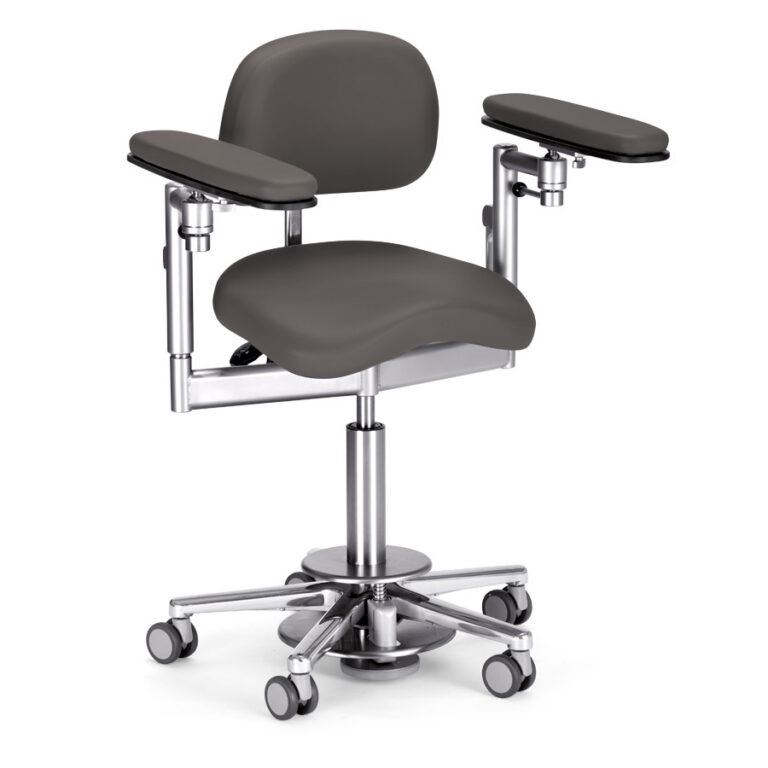
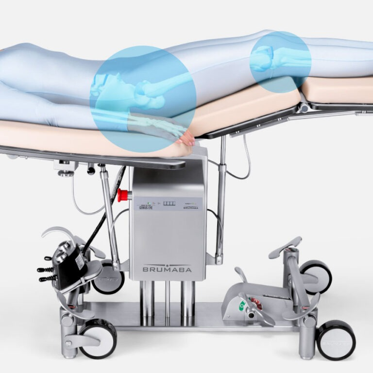
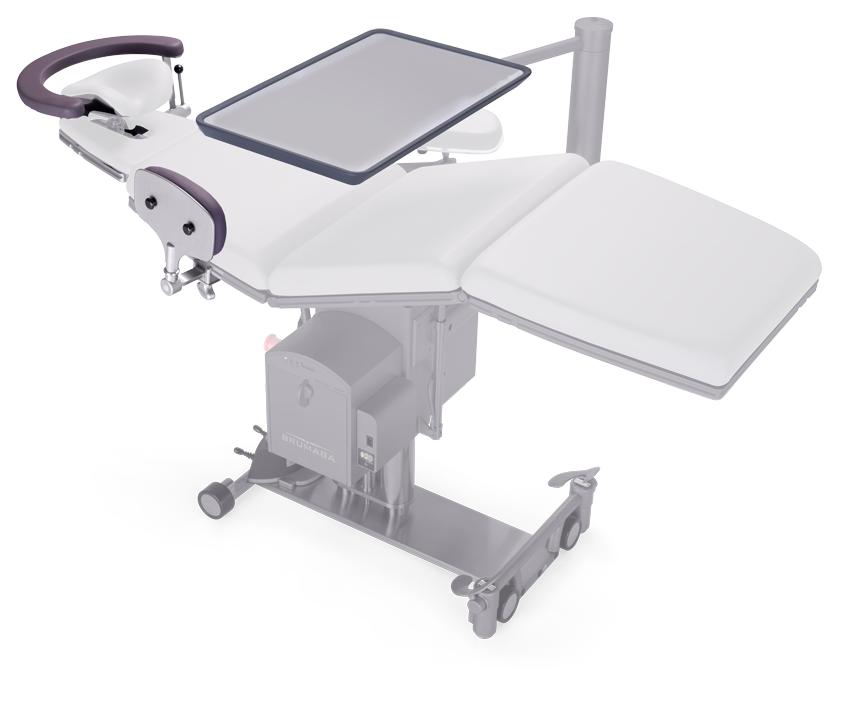
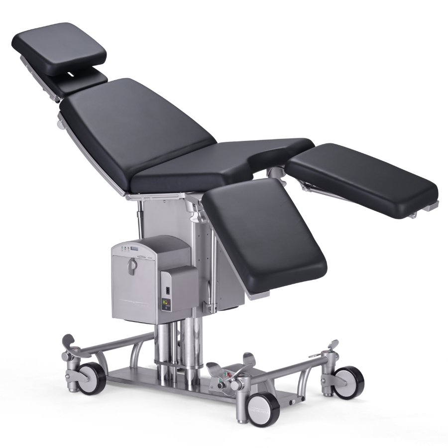
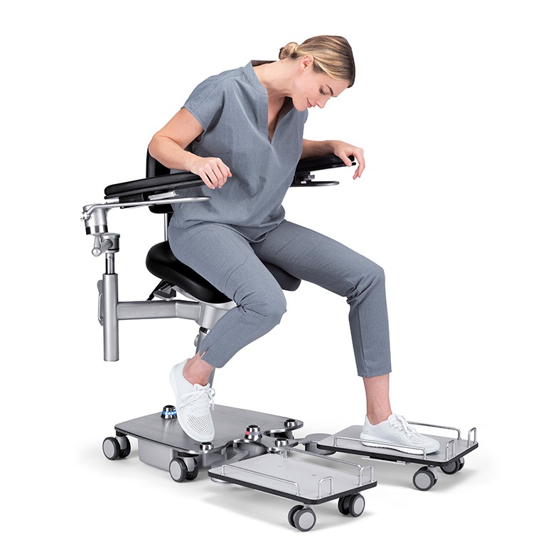
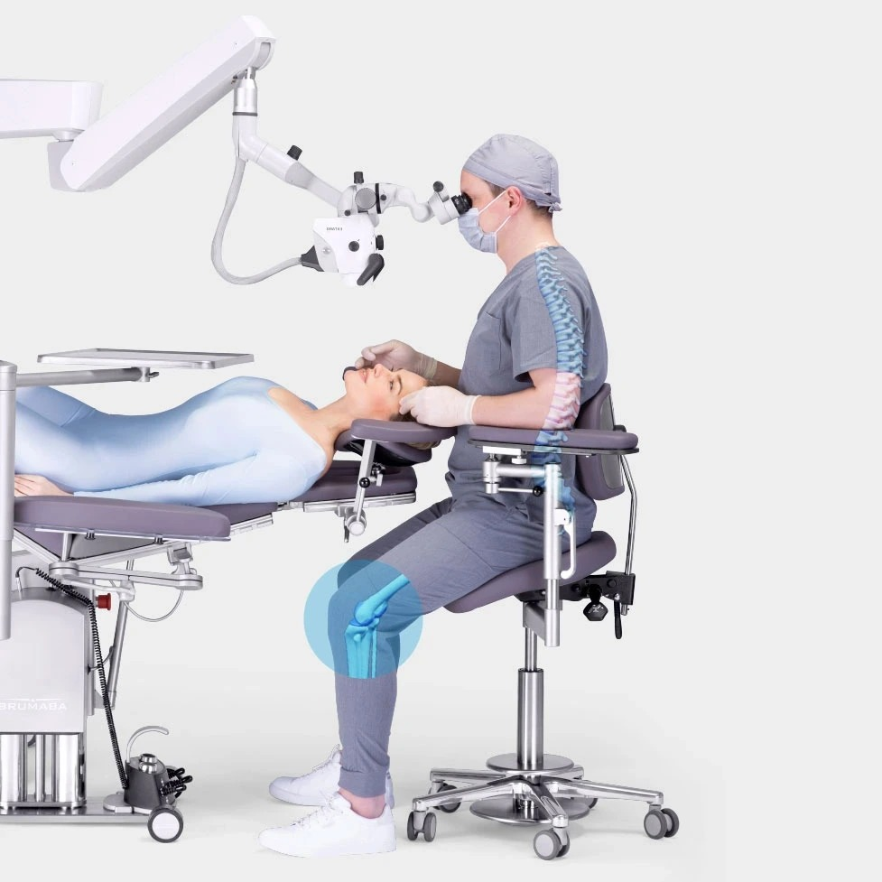
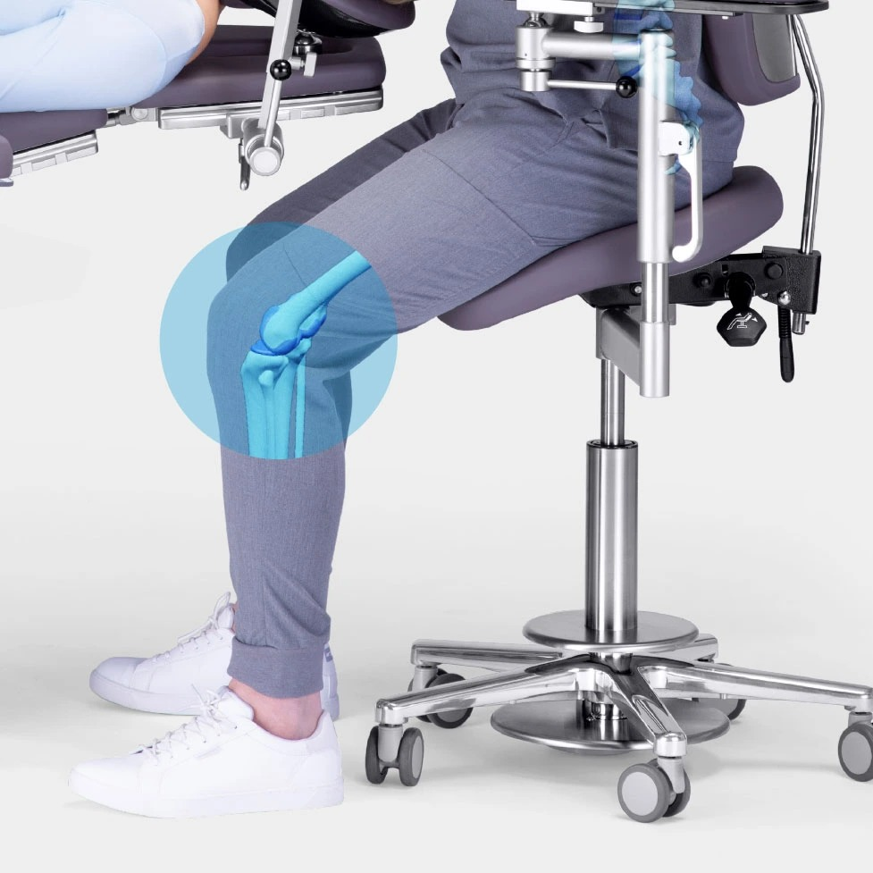
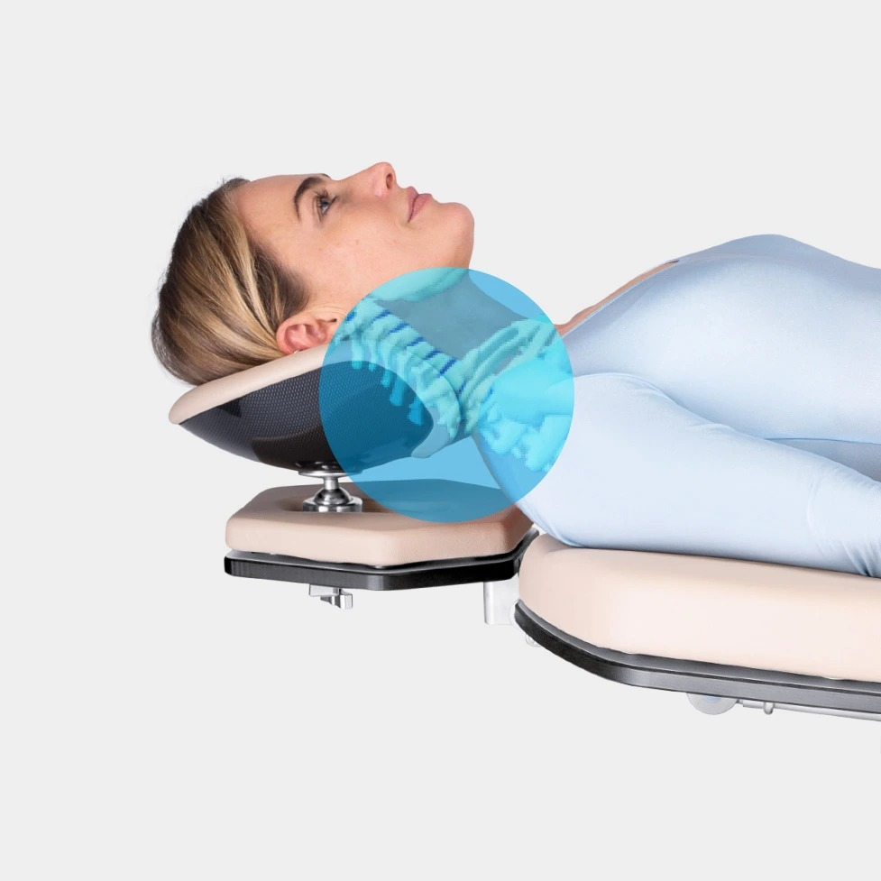

快速結論
愷樂生醫引進德國 Brumaba 手術醫療設備，涵蓋手術台、專科診療椅、人體工學外科椅凳與病患移位運送設備，供醫院、日間手術中心、專科診間與診所採購。需要選型建議、規格報價或機構大量採購，歡迎直接洽詢業務團隊。
ABOUT BRUMABA
Brumaba 是一家德國家族經營的醫療設備製造商，自 1980 年起於巴伐利亞（Bavaria）Geretsried 的自有工廠設計與生產醫療設備，堅持德國在地製造與品質工藝。
產品專精於手術台、診療椅、外科椅凳與病患移位運送設備，服務醫院、專科診間與各類醫療機構；通過 ISO 13485 醫療器材品質管理系統認證，並透過全球多國的認證合作夥伴提供在地諮詢與支援。
45年
德國專業經驗
EN ISO
13485
:2016 品質認證
80+
行銷國家
Made in
Germany
巴伐利亞原廠製造
PRODUCT CATEGORIES
以下為 Brumaba 主要產品線，實際型號、規格與供應品項歡迎來電洽詢。

德國製模組化手術台，可依外科、婦科、日間手術等不同科別調整，穩定支撐、精準定位。

電動可調診療椅，適用於婦科、泌尿科、眼科與一般診療，兼顧病患舒適與醫師操作動線。

人體工學設計的外科手術椅凳，支撐醫師長時間手術，減輕腰背與下肢負擔。

行動式病患移位與運送設備，協助院內安全、省力地轉移與運送病患，降低照護人員負擔。

各式手術／診療配件與客製整合方案，依科別需求搭配，打造完整的手術室與診間配置。
找不到需要的品項？
告訴我們科別與需求，協助您選型並報價。
立即洽詢 →＊ 醫療器材依用途與風險等級，須完成主管機關查驗登記後始得於國內供應與刊登；實際可供應品項、型號、規格、價格與衛部醫器字號，以正式報價與完成登記之品項為準。本頁產品圖與型號將於原廠資料備齊後補上。
FEATURED MODELS
以下為 Brumaba 部分代表機型，詳細規格、配置與報價歡迎來電洽詢。
手術台 · OPERATING TABLE
具備獨特「飛機功能（Aeroplane）」，能實現最佳患者體位；出色的移動性讓手術室動線更靈活，是外科手術的旗艦首選機型。

手術台 · OPERATING TABLE
彈性配置手術台，搭配防靜電手術墊、符合現代手術室安全流程，能因應不同術式與擺位需求，靈活實用。
診療床 · TREATMENT COUCH
精心設計的座椅與靈活調整選項，讓這款電動治療椅符合人體工學，是診所診療與美學療程的理想之選。
外科椅凳 · SURGEON STOOL
顯微外科手術椅，動態貼合坐姿、提供最佳背部支撐與脊椎舒緩，讓醫師長時間手術大幅減輕身體負擔。

顯微手術椅 · MICROSURGERY CHAIR
專為神經外科打造的顯微手術椅，透過手術室穩定的工作環境確保手術精準度，適合長時間精細與顯微手術。
病患擺位 · PATIENT POSITIONING
符合人體工學的病患擺位方案，搭配可調式頭枕與 >90° 膝關節屈曲角度，確保手術中安全、精準的病人體位。
想了解更多機型？
告訴我們科別與需求，提供完整型錄與報價。
索取型錄 →IN USE



MEDICAL SPECIALTIES
Brumaba 手術設備針對各專科的手術與擺位需求最佳化，廣泛應用於下列科別。
眼部手術
口腔外科・植牙
整形・重建手術
皮膚外科
門診手術
ENT
根管治療
顯微手術
WHY BRUMABA
巴伐利亞自有工廠生產，堅持德國品質工藝與嚴謹製程。
兼顧病患舒適與醫護人員操作，減輕長時間作業負擔。
可依科別與空間彈性配置，滿足不同手術與診療情境。
通過 ISO 13485 醫療器材品質管理系統，行銷全球多國。
FAQ
Brumaba 是德國家族經營的醫療設備製造商，自 1980 年起於巴伐利亞自有工廠生產手術台、診療椅、外科椅凳與病患移位運送設備，具備 ISO 13485 醫療器材品質管理認證，產品行銷全球多國。
適合醫院手術室、日間手術中心，以及婦科、泌尿科、眼科等專科診間、一般診所與長照機構等需要專業手術與診療設備的場所。
歡迎透過電話、LINE 或 Email 與愷樂生醫業務團隊聯繫，說明使用科別、空間與需求，我們將協助選型並提供正式報價與交期資訊。
是，愷樂生醫協助安裝規劃與後續售後服務聯繫，購買前的選型諮詢與購買後的維護問題皆由專人協助處理。